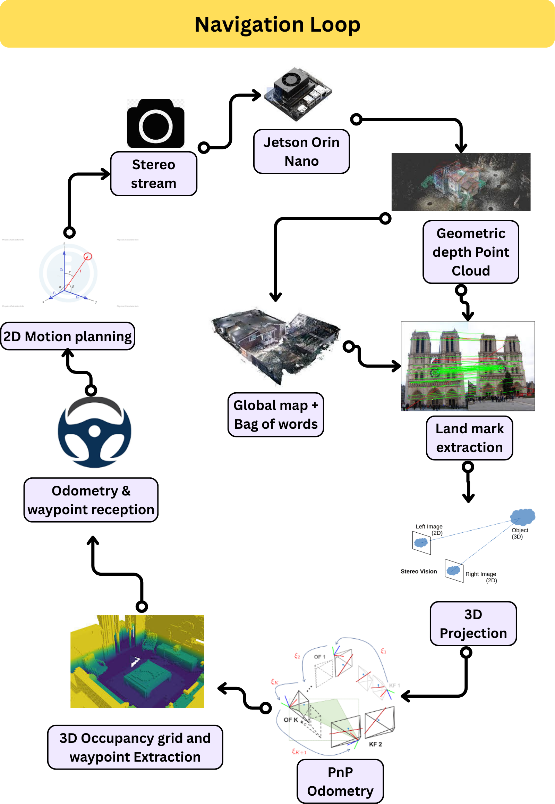

Automama is our in-house Autonomous Ground Vehicle (AGV) project, designed to transform
a custom-built electric vehicle (EV) into a fully programmable robotic platform.
The EV chassis was enhanced with sensor feedback systems for braking, steering,
and acceleration, enabling complete drive-by-wire control.
Perception Pipeline
We integrated a stereo vision system using an IMX219 stereo camera pair.
Frames from the left camera were first processed through a
YOLOv8n-Segmentation model to segment roads and obstacles.
The segmentation masks guided stereo depth estimation,
allowing us to obtain precise depth information for both drivable areas and obstacles.
Mapping & Navigation
Using the depth maps, we constructed a 2D occupancy grid of the road.
A custom local planner was developed to detect and follow the largest navigable gap
in real time, ensuring safe short-term path planning. This approach allows Automama to
react dynamically to changing environments.
Future Goals
Our long-term vision is to map the entire university campus and build
a global planner on top of the local navigation system. By integrating
visual odometry for localization, Automama will eventually
achieve seamless autonomous navigation across large-scale outdoor environments.
We have a step by step documentation of our project in the following sections.
Feel free to dive deep into our documentation in the github links however you
like !
RL_Race: Custom PPO Training Architecture for Autonomous Racing
This project implements a fully custom Proximal Policy Optimization (PPO) training pipeline for autonomous racing in a ROS 2 and Ignition Gazebo Fortress environment.
The system uses end-to-end neural networks for both actor and critic models, without relying on pre-built RL libraries such as Gymnasium or Stable Baselines.
Continuous visual and LIDAR-based state representations allow the agent to learn optimal racing strategies, while integrated SLAM enables automatic mapping of the race track for safe and efficient navigation.
Learn more
AutoDrive DevKit: 2D SLAM & Optimal Path Planning for Racing
AutoDrive DevKit provides a complete framework for autonomous racing in a simulator environment.
It features 2D SLAM for mapping race tracks into occupancy grids, advanced path planning with A* and smoothing techniques,
and trajectory optimization for high-speed lap completion. The modular ROS 2 and Python-based system allows easy integration
with the AutoDrive Simulator, enabling safe and repeatable testing of autonomous racing strategies.
Learn more
A : Digital Twin of our Campus world in Gazebo
To enable safe, repeatable, and low-cost testing of the autonomous system, we
developed a custom Gazebo simulation environment that replicates our university
campus. This simulated world is used to test and validate Automama’s full
autonomous stack, including point-to-point navigation, control, and perception
modules.
Learn more

B : Mechanical Stack
Building the electrical control stack on top of proper mechanical stack was a big
milestone in our initial work. We customized the control algorithm to throttle and
steer seamlessly.
Learn more

C : Electrical Stack
In this documentation we detail the design and implementation of the electrical control
stack for our Autonomous Ground Vehicle (AGV) project, Automama. The electrical stack consists
of three main components: the sensor suite, the embedded control system, and the
actuation interface. Together, these components enable precise drive-by-wire control of the
vehicle. We have future plans on adding renewable charging station and autonomous
charging station system for the vehicle.
Learn more
D : Perception Stack
Our AGV’s perception stack combines stereo vision and deep learning to interpret the
driving environment. A YOLOv8n-Seg model processes the left camera feed to identify
road regions and obstacles, while stereo depth estimation generates distance
information for these segmented areas. The depth data is projected into a 2D
occupancy grid, enabling the vehicle to detect free space and plan paths by following
the largest gap. This local perception system is integrated with visual odometry to
support global mapping and navigation across the campus.
Learn more
E : Navigation Stack
Our navigation stack is designed for real-time decision-making with GPU-accelerated
processing. Using DMA and zero-copy memory, sensor data is efficiently streamed to
the GPU for parallel computation. A potential fields method guides trajectory
generation by balancing attraction toward the goal and repulsion from obstacles,
ensuring smooth and collision-free paths. On top of this, we apply vehicle kinematic
and dynamic constraints so that the planned trajectory remains feasible for the
AGV’s steering, braking, and acceleration limits.
Learn more
F : Visual odometry
Work on going
Learn more
G : Global mapping & Localisation
Work on going
Learn more